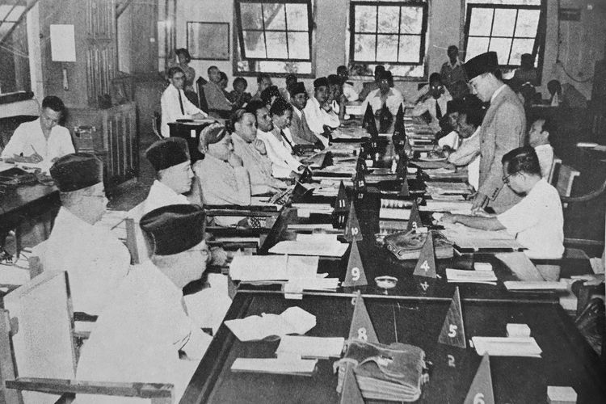
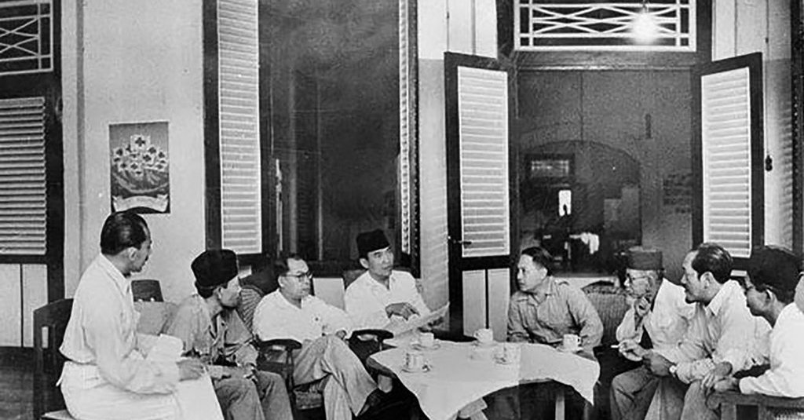
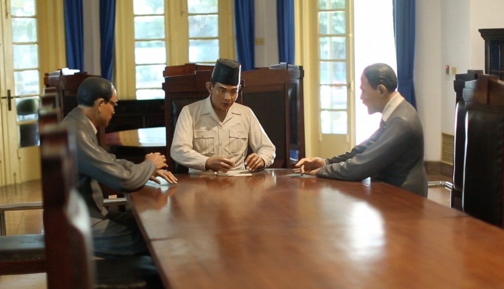
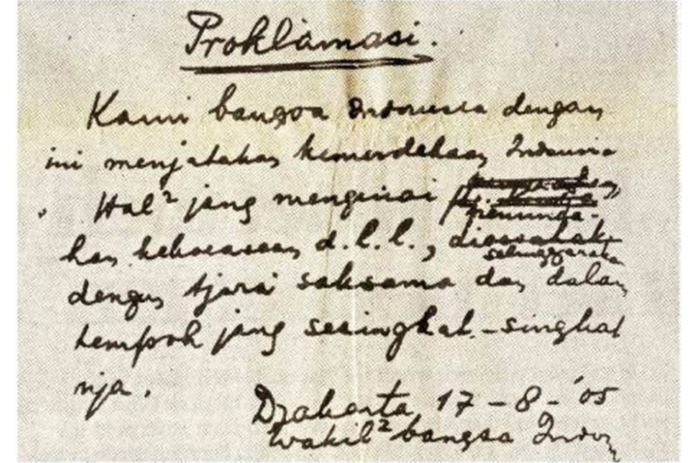
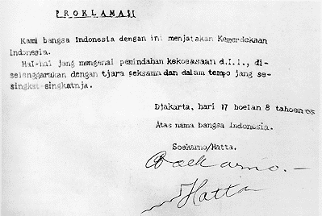

1.1.1 Akhir Perang Asia Pasifik

Perang Dunia ke II berawal dari bom yang dijatuhkan Jepang kepada Amerika Serikat pada 7 Desember 1941, Hal tersebut sangat mengunggulkan Jepang, akan tetapi hanya berlangsung selama 6 bulan. Sampai dimana Amerika menyusun kekuatan baru di Australia dan akhirnya Jepang mundur jauh di pertempuran Laut Karang pada 7-8 Mei 1942
Pada akhirnya, pangkalan perang Jepang direbut Sekutu diantaranya:
- Kwajelein (Kepulauan Marshall) - Februari 1944
- Guam - 19 Juni 1944
- Saipan (Kepulauan Mariana) - 9 Juli 1944

Semenjak pergantian kabinet Jepang, mereka mulai membentuk kesatuan militer dan semi militer di Indonesia berupa Heiho, Peta, Seinendan, Keibodan, dan Fujinkai
Sampailah momen dimana pada 7 September 1944, dikeluarkan Janji Koiso. Janji Koiso menyebut bahwa,
Indonesia akan diberi kemerdekaan di kemudian hari.
Hasil dari Janji Koiso, pada 29 April 1945 Jepang membentuk Dokuritsu Junbi Cosakai atau yang kita kenal sebagai BPUPKI. BPUPKI diketuai dr. Radjiman Wediodiningrat dan bertugas menyusun pembangunan pemerintahan Indonesia yang merdeka.
Melalui rapat di Singapura pada Juli 1945, kemerdekaan akan diberi kepada Indonesia mulai dari Jawa pada 7 September 1945 dan lainnya setelah Jawa.
Pada 7 Agustus 1945 Jenderal Terauchi menyetujui pembentukan Dokuritsu Junbi Inkai atau yang kita kenal sebagai PPKI. Tugas PPKI ini yakni melanjutkan hasil dari BPUPKI. Ini kemudian ditindaklanjuti pada tanggal 9 Agustus 1945 dengan pemanggilan Ir. Soekarno, Mohammad Hatta, dan dr. Radjiman Wediodiningrat ke Dalat atau yang kita panggil Ho Chi Minh di Vietnam.

Mereka kemudian pulang dari Dalat balik ke Indonesia pada 14 Agustus 1945. Sesuai dengan dugaan dari pembicaraan para tokoh PPKI, pada 6 dan 9 Agustus 1945 dijatuhkan bom atom di Hiroshima dan Nagasaki.
Karena keparahan peristiwa pengeboman Hiroshima-Nagasaki, pada 15 Agustus 1945 Kaisar Hirohito memerintahkan penghentian permusuhan terhadap Sekutu, semacam permintaan damai dari sisi Jepang.
Di Jakarta, para tokoh pejuang sedang merumuskan langkah penting yang perlu dilakukan untuk mencapai kemerdekaan. Langkah-langkah tersebut sebagai berikut:
- Menentukan saat tepat untuk memproklamasikan kemerdekaan.
- Menentukan tokoh yang akan memproklamasikan kemerdekaan.
- Menyusun teks proklamasi.
- Menentukan bentuk pelaksanaan proklamasi yang tepat.
- Mempersiapkan perlengkapan negara yang kelak diperlukan.
1.1.2 Peristiwa Rengasdengklok

Chaerul Saleh melakukan pertemuan di Gedung Lembaga Bakteriologi di Jalan Pegangsaan Timur no.17 Jakarta pada 15 Agustus 1945 pkl 20.00 WIB dari pertemuan tersebut dihasilkan keputusan-keputusan sebagai berikut:
- Mendesak Soekarno-Hatta untuk memproklamasikan kemerdekaan di hari yang sama.
- Menunjuk Wikana, Darwis, dan Subadio Untuk menyampaikan kepada Soekarno-Hatta bahwa kemerdekaan tidak diproklamasikan melalui PPKI.
- Membagi tugas kepada pelajar dan pemuda seluruh Jakarta untuk merebut kekuasaan Jepang.
Para pemuda kemudian melaksanakan sebuah pertemuan lagi di Asrama Baperpi di Jl. Cikini No.71 Jakarta pada 24.00 WIB. Hasil dari akhir tersebut yakni membawa Soekarno-Hatta ke Rengasdengklok untuk menjauhkan mereka dari tekanan Jepang yang mungkin memengaruhi mereka.
Pada 16 Agustus 1945 pkl 14.00 WIB, Soekarno-Hatta dibawa ke Rengasdengklok atas pimpinan Syodanco Singgih. Soekarno-Hatta seharian di Rengasdengklok, dengan para pemuda mencoba untuk membuat Soekarno-Hatta memproklamasikan kemerdekaan lepas kaitan Jepang. Setelah sekian lamanya, Soekarno setuju. Mereka secepatnya balik ke Jakarta.
Di sisi lain, terdapat pertemuan antara golongan tua dan golongan muda di Jakarta yang dipimpin oleh masing-masing Mr.Ahmad Soebardjo dan Wikana. Pertemuan berakhir dengan kesepakatan bahwa proklamasi dilaksanakan di Jakarta. Mereka kemudian segera menjemput Soekarno-Hatta di Rengasdengklok.
Setelah sampai, terdapat kesepakatan lagi bahwa proklamasi kemerdekaan dilaksanakan pada 17 Agustus 1945.
Berikut merupakan penjelasan akan golongan tua dan golongan muda:
- GOLONGAN TUA - Ir. Soekarno, Mr. Moh Yamin, Drs. Moh Hatta, Mr. Ahmad Soebardjo - memiliki sikap hati-hati, berpendapat segala dilaksanakan sesuai Jepang.
- GOLONGAN MUDA - Sukarni, Adam Malik, dr. Muwardi, Wikana, Chaerul Saleh, B.M. Diah - memiliki sikap agresif, berpendapat kemerdekaan dilaksanakan lepas dari Jepang.
1.1.3 Perumusan Teks Proklamasi Kemerdekaan Indonesia

Perumusan teks proklamasi dilakukan di rumah perwira angkatan laut Jepang, yaitu Laksamana Maeda. Perumusan naskah lebih spesifiknya terjadi di ruang makan rumahnya Maeda.
Kalimat pertama dari rumusan teks proklamasi merupakan buah pikiran Soekarno dan Ahmad Soebardjo, sedangkan kalimat terakhir sumbangan pikiran Moh. Hatta.

Pada 17 Agustus 1945 pkl 04.00 WIB, Soekarno membacakan rumusan naskah proklamasi. Kemudian Sukarni mengusulkan bahwa Soekarno-Hatta lah yang harus menandatangani naskah proklamasi.
Sayuti Melik diminta Soekarno untuk mengetik naskah proklamasi tersebut. Ketikan tersebut merupakan naskah proklamasi paling pertama yang termasuk resmi dengan tanda tangan Soekarno-Hatta.

Hingga sampailah ke pembacaan naskah proklamasi oleh Soekarno di rumah kediaman Soekarno yang dilakukan di Jalan Pegangsaan Timur No.56 Jakarta pada Jumat, 17 Agustus 1945.